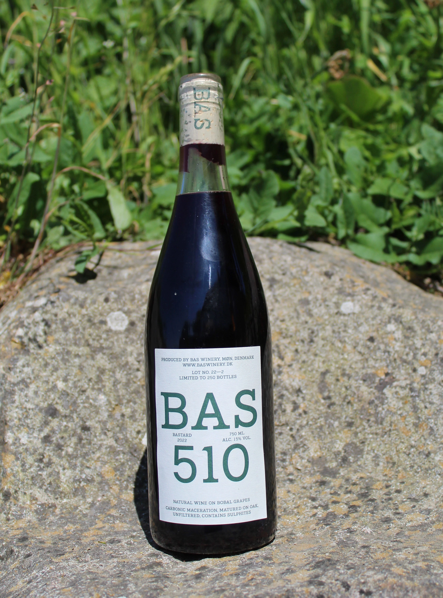

BAS 510
Natural Pet-Nat on Bobal Grapes and Apples
A softly fizzy sparkling wine crafted using the ancient Méthode Ancestrale. It finishes fermenting in the bottle, resulting in natural spritz. Expect a hazy appearance with unfiltered yeast particles. The crown cap seals the deal, and no sulphites were added. Cheers!
DKK 150,-
